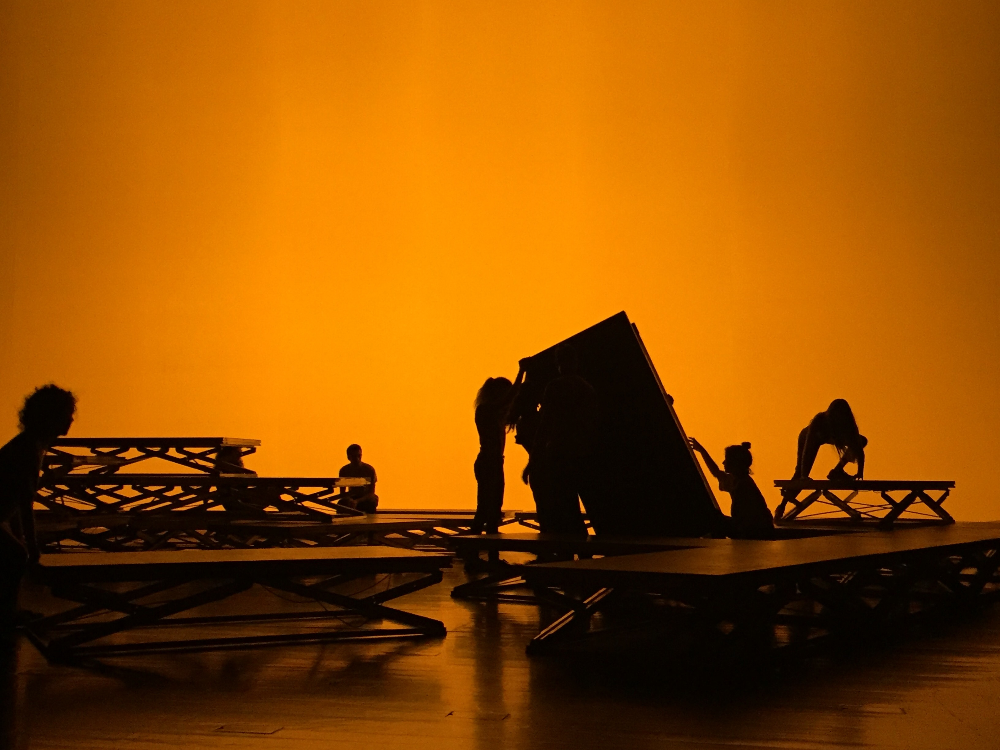

APEX
2019
APEX was a live performance that emerged from a residency in Culturgest Zona Temporária, Lisbon, created by Gabriel Siams, João Francisco Reis, Maria Miguel Café in which I was invited to take part as a performer.
Synopsis:
A instruction piece is given to the performers. For 60 minutes, they must act on it,
while on stage, stimulated by the gradual, intense and climatic sound and light effects. The
performance is not in any way rehearsed, given the fact that the performers have no prior
access to the lights or sounds, performing completely oblivious and instinctively. The final
piece will be determined the day the performance happens. The sound and light was created
by three people. They have no power over the actual performance, and no clue of what is
going to happen.
Instruction piece:
In 60 minutes, reach a climax using the material on stage to build a tall construction. The
action does not end until you are satisfied with it.
Creation
Gabriel Siams, João Francisco Reis, Maria Miguel Café
With
Adriana João, Alice Giuliani, Cinza Nunes, Guilherme Barroso, Isabel Medeiros, Laurinda Marques, Maria Abrantes, Hugo Januário, Z
